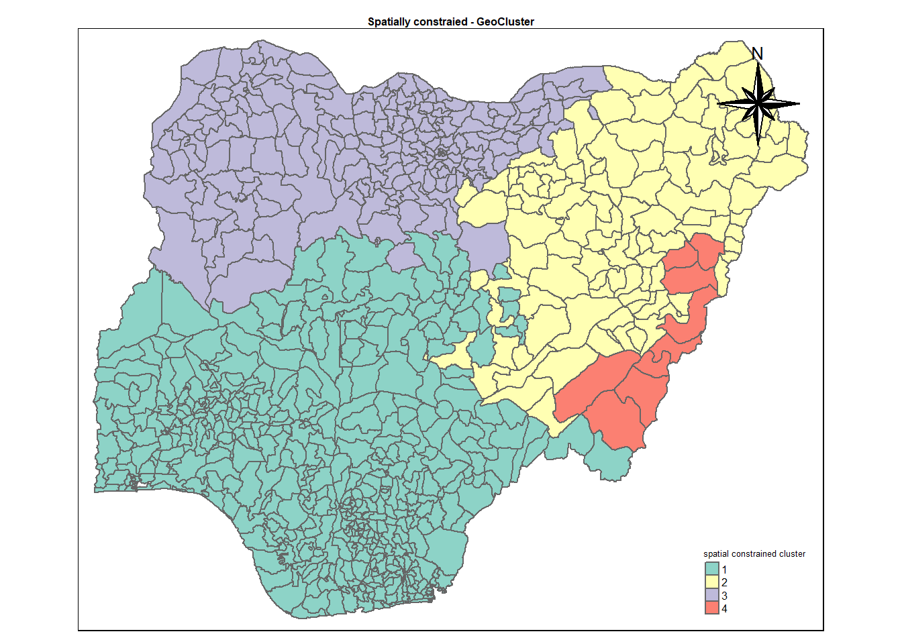

pacman::p_load(rgdal, spdep, tmap, sf, ClustGeo, funModeling,knitr,
ggpubr, cluster, factoextra, NbClust,
heatmaply, corrplot, psych, tidyverse, GGally)TakeHome_Ex02_Updated : Regionalization by clustering of multivariate Water point attributes in Nigeria
1. Setting the scene.
In this take-home exercise we are going to regionalise Nigeria.The process of creating regions is called regionalisation. A regionalisation is a special kind of clustering where the objective is to group observations which are -
Similar in their statistical attributes &
Similar in their spatial location.
We are going to regionalise Nigeria by using following measures :
Total number of functional water points.
Total number of nonfunctional water points.
Percentage of functional water points.
Percentage of non-functional water points.
Percentage of main water point technology (i.e. Hand Pump).
Percentage of usage capacity.
Percentage of rural water points.
2. Approach.
As we want to delineate homogeneous region of Nigeria by using geographically referenced multivariate water point attributes data, we will be conducting following analysis -
Hierarchical cluster analysis
K means cluster analysis
Spatially constrained cluster analysis using SKATER approach
Spatially constrained cluster analysis using ClustGeo method
To achieve above mentioned objectives, we will perform following steps.
Import required packages in R environment.
Importing required .csv and shapefile into R using sf package.
Deriving the proportion of functional and non-functional water point at LGA level using appropriate tidyr and dplyr methods.
Combining the geospatial and aspatial data frame into simple feature data frame.
Delineating water point measures functional regions by using conventional hierarchical clustering.
Delineating water point measures functional regions by using spatially constrained clustering algorithms.
Thematic Mapping - Plotting maps to show the water points measures derived by using appropriate statistical graphics and choropleth mapping technique.
Analytical Mapping - Plotting functional regions delineated by using both non-spatially constrained and spatially constrained clustering algorithms.
3. Installing and loading required packages.
Let us install necessary R packages into R and launch these R packages into R environment.
The R packages needed for this exercise are as follows :
Spatial data handling using sf, rgdal and spdep.
Attribute data handling using tidyverse, especially readr, ggplot2 and dplyr. tidyverse for importing and processing non-spatial data. In this exercise, readr package will be used for importing wkt data and dplyr package will be used to wrangling the data.
Choropleth mapping using tmap.
Multivariate data visualisation and analysis using coorplot, ggpubr, and heatmaply.
Cluster analysis cluster and ClustGeo.
The code chunk below installs and launches these R packages into R environment.
4. Importing Data.
4.1 Importing Water point Data.
Data used are imported from WPdx Global Data Repositories in csv format and from geoBoundaries in shape file format.
4.1.1 Importing Geospatial Data.
nga <- st_read(dsn = "data\\geospatial\\geoBoundaries-NGA-ADM2-all",
layer = "geoBoundaries-NGA-ADM2",
crs = 4326) Reading layer `geoBoundaries-NGA-ADM2' from data source
`C:\Yogendra345\ISSS624_A01\TakeHome_Ex02\data\geospatial\geoBoundaries-NGA-ADM2-all'
using driver `ESRI Shapefile'
Simple feature collection with 774 features and 5 fields
Geometry type: MULTIPOLYGON
Dimension: XY
Bounding box: xmin: 2.668534 ymin: 4.273007 xmax: 14.67882 ymax: 13.89442
Geodetic CRS: WGS 84Note - CRS stands forCoordinate Reference System in EPSG format. EPSG: 4326 is wgs84 Geographic Coordinate System.
4.1.2 Importing Aspatial Data.
Following chunk of code imports .csv data filtered for Nigeria. Here we use filter() command of dplyr package to select Nigerial records only.
wp_nga <- read_csv("data\\aspatial\\Water_Point.csv") %>%
filter(`#clean_country_name` == "Nigeria")Rows: 1048575 Columns: 70
── Column specification ────────────────────────────────────────────────────────
Delimiter: ","
chr (44): #source, #report_date, #status_id, #water_source_clean, #water_sou...
dbl (24): row_id, #lat_deg, #lon_deg, #install_year, #rehab_year, #fecal_col...
lgl (2): is_urban, latest_record
ℹ Use `spec()` to retrieve the full column specification for this data.
ℹ Specify the column types or set `show_col_types = FALSE` to quiet this message.4.1.3 Creating Simple feature data frame from an aspatial and geospatial data frame.
wp_nga_sf <- st_as_sf(wp_nga,
coords = c("#lat_deg", "#lon_deg"),
crs=4326) %>%
st_transform(crs = 26391)Note - EPSG: 26391 is Nigeria’s SVY21 Projected Coordinate System.
st_transform() of sf package is used to reproject nga from one coordinate system(WGS 84) to another coordinate system(ESPG) mathemetically.
nga_sf <- st_transform(nga,crs = 26391)5. Data Pre-processing.
Referring to the work done by Ong Zhi Rong Jordan (our MITB classmate).Link to Jordan’s work, here I am going to do some data wrangling to remove duplicates.
duplicated_area <- nga_sf %>%
mutate(dup_shapeName = duplicated(shapeName)) %>%
filter(dup_shapeName)
duplicated_area$shapeName[1] "Bassa" "Ifelodun" "Irepodun" "Nasarawa" "Obi" "Surulere"The below chunk assigns the right shape names corresponding to index values
nga_sf$shapeName[c(94,95,304,305,355,356,519,546,547,693,694)] <-
c("Bassa (Kogi)","Bassa (Plateau)", "Ifelodun (Kwara)","Ifelodun (Osun)", "Irepodun (Kwara)","Irepodun (Osun)", "Nassarawa","Obi (Benue)","Obi(Nasarawa)", "Surulere (Lagos)","Surulere (Oyo)")duplicated_area <- nga_sf %>%
mutate(dup_shapeName = duplicated(shapeName)) %>%
filter(dup_shapeName)
duplicated_area$shapeNamecharacter(0)The output is zero meaning there are no duplicate values.
5.1 Point-in-Polygon - Join aspatial and geospatial data.
Let us perform a spatial operation Point-in-Polygon. It is an operation in which points from one feature dataset are overlaid on the polygons of another to determine which points are contained within the polygons. Here we are going to transfer the attribute information in wp_nga_sf data frame into wp_sf data frame using st_join()function.
wp_sf <- st_join(wp_nga_sf, nga_sf)5.2 Measures used for regionalisation.
Based on the WPdx standard, following measures are chosen -
| Measure | col_id | Description |
|---|---|---|
| Total number of functional water points | #status_clean | No. of functional waterpoints are derived from this categorised column. |
| Total number of nonfunctional water points | #status_clean | No. of non- functional waterpoints are derived from this categorised column. |
| Percentage of functional water points | #status_clean | Percentage of functional waterpoints are derived from the already derived columns. |
| Percentage of non-functional water points | #status_clean | Percentage of non-functional waterpoints are derived from the already derived columns. |
| Percentage of main water point technology | #water_tech_clean | Describe the system being used to transport the water from the source to the point of collection (e.g. Hand pump) |
| Percentage of usage capacity | usage_cap | Recommended maximum users per water point. For eg. 250 people per tap [tapstand, kiosk, rainwater catchment] 500 people per hand pump. |
| Percentage of rural water points | is_urban | Is in an urban area as defined by EU Global Human Settlement Database TRUE/FALSE - urban/rural. |
| Percentage of crucial waterpoints | crucialness_score | Crucialness score shows how important the water point would be if it were to be rehabilitated. |
| Percentage of stale water points | staleness_score | The staleness score represents the depreciation of the point’s relevance. Varies between 0 and 100. Higher the value more the staleness. |
5.2.1 - Renaming Columns.
Let us rename some of the column names which begins with # for ease of use by using rename() function.
wp_sf <-wp_sf %>%
rename ("water_tech" = "#water_tech_clean") %>%
rename ("status_clean" = "#status_clean") %>%
rename ("status_id" = "#status_id")5.2.2 Replacing NA values.
Now we are replacing the NA values in the status_clean column by Unknown.
wp_nga <- wp_sf %>%
mutate(status_cle = replace_na(status_clean, "Unknown"))5.2.3 Recoding the values.
There are water technology values mentioned along with the manufacturer like India Mark III, Afridev. We will recode all those manufacturers into one class as Hand Pump using recode() function.
wp_nga <-wp_nga %>%
mutate(wpt_tech=recode(water_tech,
'Hand Pump - Rope Pump'='Hand Pump',
'Hand Pump - India Mark III'='Hand Pump',
'Hand Pump - Afridev'='Hand Pump',
'Hand Pump'='Hand Pump',
'Hand Pump - India Mark II'='Hand Pump',
'Hand Pump - Mono'= 'Hand Pump'))5.2.4 Extracting Funtional, Non-Functional and Unknown water points.
wpt_functional <- wp_nga %>%
filter(status_cle %in%
c("Functional",
"Functional but not in use",
"Functional but needs repair"))
wpt_nonfunctional <- wp_nga %>%
filter(status_cle %in%
c("Abandoned/Decommissioned",
"Abandoned",
"Non-Functional",
"Non functional due to dry season",
"Non-Functional due to dry season"))
wpt_unknown <- wp_nga %>%
filter(status_cle == "Unknown")
handpump <- wp_nga %>%
filter(wpt_tech == "Hand Pump")
usecap_lessthan1000 <- wp_nga %>%
filter(usage_capacity < 1000)
usecap_greatthan1000 <- wp_nga %>%
filter(usage_capacity >= 1000)
wpt_rural <- wp_nga %>%
filter(is_urban == FALSE)
crucial_score <- wp_nga %>%
filter(crucialness_score >= 0.5)
stale_score <- wp_nga %>%
filter(staleness_score >= 50)We have to perform 2 steps to calculate the absolue numbers of waterpoint attributes in each division.
Let us identify no. of water points located inside each division by using st_intersects().
Next, let us calculate numbers of hand-pumps that fall inside each division by using length() function.
nga_wp <- nga_sf %>%
mutate(total_wpt = lengths(
st_intersects(nga_sf, wp_nga))) %>%
mutate(wpt_functional = lengths(
st_intersects(nga_sf, wpt_functional))) %>%
mutate(wpt_nonfunctional = lengths(
st_intersects(nga_sf, wpt_nonfunctional))) %>%
mutate(wpt_unknown = lengths(
st_intersects(nga_sf, wpt_unknown)))%>%
mutate(handpump = lengths(
st_intersects(nga_sf, handpump)))%>%
mutate(cap_lessthan1000 = lengths(
st_intersects(nga_sf, usecap_lessthan1000)))%>%
mutate(cap_greatthan1000 = lengths(
st_intersects(nga_sf, usecap_greatthan1000)))%>%
mutate(wpt_rural = lengths(
st_intersects(nga_sf, wpt_rural)))%>%
mutate(wpt_crucial = lengths(
st_intersects(nga_sf, crucial_score)))%>%
mutate(wpt_stale = lengths(
st_intersects(nga_sf, stale_score)))Calculate what is the overall proportion with respect to the total no. of waterpoints
nga_wp_clus <- nga_wp %>%
mutate(pct_functional = wpt_functional/total_wpt) %>%
mutate(pct_nonfunctional = wpt_nonfunctional/total_wpt) %>%
mutate(pct_handpump = handpump/total_wpt) %>%
mutate(pct_capless1000 = cap_lessthan1000/total_wpt) %>%
mutate(pct_capmore1000 = cap_greatthan1000/total_wpt) %>%
mutate(pct_rural = wpt_rural/total_wpt) %>%
mutate(pct_crucial = wpt_crucial/total_wpt) %>%
mutate(pct_stale = wpt_stale/total_wpt) 5.3 Create rds file
In order to manage the storage data efficiently, we are saving the final data frame in rds format.
write_rds(nga_wp_clus, "data/nga_wp_clus.rds")
write_rds(wpt_functional, "data/wpt_functional.rds")
write_rds(wpt_nonfunctional, "data/wpt_nonfunctional.rds")
write_rds(wp_nga, "data/wp_nga.rds")6. Exploratory Data Analysis.
wp_nga <- read_rds("data/wp_nga.rds")
ngawater_sf<-wp_nga %>%
mutate(status_id=
case_when(status_id=="Yes"~"Functional",
status_id=="No"~"Non-Functional",
status_id== "Unknown"~"unknown"))ggplot(data= ngawater_sf,
aes(x= status_id)) +
geom_bar(fill= 'light blue') +
geom_text(stat = 'Count',
aes(label= paste0(stat(count), ', ',
round(stat(count)/sum(stat(count))*100,
1), '%')), vjust= -0.5, size= 3) +
labs(y= 'No. of \nwater points',
x= 'Water Points Type',
title = "Distribution of water points") +
theme(axis.title.y= element_text(angle=0),
axis.ticks.x= element_blank(),
panel.background= element_blank(),
axis.line= element_line(color= 'black'),
axis.title.y.left = element_text(vjust = 0.5),
plot.title = element_text(hjust=0.5))Warning: `stat(count)` was deprecated in ggplot2 3.4.0.
ℹ Please use `after_stat(count)` instead.Conclusion - Nigeria consists of approx. 55% of functional, 34% of non-functional and 11% of unknown water points.
6.1 District wise proportion of water points.
To find out the solution for this question, first let’s prepare the data accordingly:
Create separate dataframe for each plot.
Arrange it in descending order by the count values using arrange() function.
Select top 10 divisions using slice_head() function.
6.1.1 Prepare Data
nga_wp_clus <- read_rds("data/nga_wp_clus.rds")
top10_crucial <- nga_wp_clus %>%
st_set_geometry(NULL) %>%
arrange(desc(wpt_crucial)) %>%
slice_head(n=10)
top10_rural <- nga_wp_clus %>%
st_set_geometry(NULL) %>%
arrange(desc(wpt_rural)) %>%
slice_head(n=10)
top10_stale <- nga_wp_clus %>%
st_set_geometry(NULL) %>%
arrange(desc(wpt_stale)) %>%
slice_head(n=10)
top10_handpump <- nga_wp_clus %>%
st_set_geometry(NULL) %>%
arrange(desc(handpump)) %>%
slice_head(n=10)6.1.2 Top 10 Crucial
tp1 <- ggplot(data = top10_crucial,
aes(y = reorder(shapeName,wpt_crucial),
x= wpt_crucial)) +
geom_bar(stat = "identity",
fill = "coral")+
labs(x='No. of crucial water points',
y=" ",
title="Top 10 divisions with crucial waterpoints") +
geom_text(stat='identity', aes(label=paste0(wpt_crucial)),hjust=-0.5)+
theme(axis.title.y=element_text(angle=0),
axis.ticks.x=element_blank(),
panel.background = element_blank(),
axis.line = element_line(color='grey'),
plot.title = element_text(hjust = 0.5,
size = 10),
axis.title.y.left = element_text(vjust = 0.5),
axis.text = element_text(face="bold",
size=6))6.1.3 Top 10 Rural
tp2 <- ggplot(data = top10_rural,
aes(y = reorder(shapeName,wpt_rural),
x= wpt_rural)) +
geom_bar(stat = "identity",
fill = "hotpink")+
labs(x='No. of rural water points',
y=" ",
title="Top 10 divisions with rural waterpoints",) +
geom_text(stat='identity', aes(label=paste0(wpt_rural)),hjust=-0.5)+
theme(axis.title.y=element_text(angle=0),
axis.ticks.x=element_blank(),
panel.background = element_blank(),
axis.line = element_line(color='grey'),
plot.title = element_text(hjust = 0.5,
size = 10),
axis.title.y.left = element_text(vjust = 0.5),
axis.text = element_text(face="bold",
size=6) )6.1.4 Top 10 Stale.
tp3 <- ggplot(data = top10_stale,
aes(y = reorder(shapeName,wpt_stale),
x= wpt_stale)) +
geom_bar(stat = "identity",
fill = "red")+
labs(x='No. of stale water points',
y=" ",
title="Top 10 divisions with stale waterpoints",) +
geom_text(stat='identity', aes(label=paste0(wpt_stale)),hjust=-0.5)+
theme(axis.title.y=element_text(angle=0),
#axis.title.y=element_blank(),
axis.ticks.x=element_blank(),
panel.background = element_blank(),
axis.line = element_line(color='grey'),
plot.title = element_text(hjust = 0.5,
size = 10),
axis.title.y.left = element_text(vjust = 0.5),
axis.text = element_text(face="bold",
size=6))6.1.5 Top 10 handpumps
tp4 <- ggplot(data = top10_crucial,
aes(y = reorder(shapeName,handpump),
x= handpump)) +
geom_bar(stat = "identity",
fill = "yellow")+
labs(x='No. of handpump water points',
y=" ",
title="Top 10 divisions with handpump waterpoints",) +
geom_text(stat='identity', aes(label=paste0(handpump)),hjust=-0.5)+
theme(axis.title.y=element_text(angle=0),
axis.ticks.x=element_blank(),
panel.background = element_blank(),
axis.line = element_line(color='grey'),
plot.title = element_text(hjust = 0.5,
size = 8),
axis.title.y.left = element_text(vjust = 0.5),
axis.text = element_text(face="bold",
size=6))ggarrange(tp1, tp2, tp3, tp4,
ncol=2,
nrow=2)6.2 Understand Overall Distribution.
The code chunks below are used to create multiple histograms to reveal the overall distribution of the selected variables in nga_wp_clus. They consist of two main parts.
Create the individual histograms using geom_histogram() and geom_density() functions.
Group these histograms together by using the ggarrange() function of ggpubr package.
h1 <- ggplot(data=nga_wp_clus,
aes(x= pct_functional,
y= ..density..)) +
geom_histogram(bins=20,
color="black",
fill="coral")+
geom_density(color="black",
alpha = 0.5)+
theme(panel.background= element_blank())
h2 <- ggplot(data=nga_wp_clus,
aes(x= pct_nonfunctional,
y= ..density..)) +
geom_histogram(bins=20,
color="black",
fill="coral")+
geom_density(color="black",
alpha = 0.5)+
theme(panel.background= element_blank())
h3 <- ggplot(data=nga_wp_clus,
aes(x= pct_handpump,
y= ..density..)) +
geom_histogram(bins=20,
color="black",
fill="coral")+
geom_density(color="black",
alpha = 0.5)+
theme(panel.background= element_blank())
h4 <- ggplot(data=nga_wp_clus,
aes(x= pct_rural,
y= ..density..)) +
geom_histogram(bins=20,
color="black",
fill="coral")+
geom_density(color="black",
alpha = 0.5)+
theme(panel.background= element_blank())
h5 <- ggplot(data=nga_wp_clus,
aes(x= pct_capmore1000,
y= ..density..)) +
geom_histogram(bins=20,
color="black",
fill="coral")+
geom_density(color="black",
alpha = 0.5)+
theme(panel.background= element_blank())
h6 <- ggplot(data=nga_wp_clus,
aes(x= pct_capless1000,
y= ..density..)) +
geom_histogram(bins=20,
color="black",
fill="coral")+
geom_density(color="black",
alpha = 0.5)+
theme(panel.background= element_blank())
h7 <- ggplot(data=nga_wp_clus,
aes(x= pct_crucial,
y= ..density..)) +
geom_histogram(bins=20,
color="black",
fill="coral")+
geom_density(color="black",
alpha = 0.5)+
theme(panel.background= element_blank())
h8 <- ggplot(data=nga_wp_clus,
aes(x= pct_stale,
y= ..density..)) +
geom_histogram(bins=20,
color="black",
fill="coral")+
geom_density(color="black",
alpha = 0.5)+
theme(panel.background= element_blank())
ggarrange(h1, h2, h3, h4, h5, h6, h7, h8,
ncol = 4,
nrow = 2)Warning: The dot-dot notation (`..density..`) was deprecated in ggplot2 3.4.0.
ℹ Please use `after_stat(density)` instead.Warning: Removed 244 rows containing non-finite values (`stat_bin()`).Warning: Removed 244 rows containing non-finite values (`stat_density()`).Warning: Removed 244 rows containing non-finite values (`stat_bin()`).Warning: Removed 244 rows containing non-finite values (`stat_density()`).Warning: Removed 244 rows containing non-finite values (`stat_bin()`).Warning: Removed 244 rows containing non-finite values (`stat_density()`).Warning: Removed 244 rows containing non-finite values (`stat_bin()`).Warning: Removed 244 rows containing non-finite values (`stat_density()`).Warning: Removed 244 rows containing non-finite values (`stat_bin()`).Warning: Removed 244 rows containing non-finite values (`stat_density()`).Warning: Removed 244 rows containing non-finite values (`stat_bin()`).Warning: Removed 244 rows containing non-finite values (`stat_density()`).Warning: Removed 244 rows containing non-finite values (`stat_bin()`).Warning: Removed 244 rows containing non-finite values (`stat_density()`).Warning: Removed 244 rows containing non-finite values (`stat_bin()`).Warning: Removed 244 rows containing non-finite values (`stat_density()`).We can observe that distribution of rural water points proportion is left skewed and distribution of proportion of staleness water points is right skewed.
7. Understand Spread of Hand pumps across Nigeria.
7.1 Total Waterpoints spread across Nigeria.
cm1 <- tm_shape(nga_wp_clus)+
tm_fill("total_wpt",
style = "quantile",
palette = "Blues",
title = "Total \nWaterpoints ratio") +
tm_layout(main.title = "Distribution of total no. of waterpoints",
main.title.position = "center",
main.title.size = 1,
legend.height = 0.6,
legend.width = 0.6,
legend.text.size = 0.6,
legend.title.size = 0.6,
main.title.fontface = "bold",
frame = TRUE) +
tmap_mode("plot")+
tm_borders(alpha = 0.5) +
tm_compass(type="4star",
position=c("right", "top"))tmap mode set to plotting7.2 Handpump Spread
cm2 <- tm_shape(nga_wp_clus)+
tm_fill("handpump",
style = "quantile",
palette = "Blues",
title = "Handpump \nWaterpoints ratio") +
tm_layout(main.title = "Distribution of handpumps",
main.title.position = "center",
main.title.size = 1.0,
legend.height = 0.6,
legend.width = 0.6,
legend.text.size = 0.6,
legend.title.size = 0.6,
main.title.fontface = "bold",
frame = TRUE) +
tmap_mode("plot")+
tm_borders(alpha = 0.5) +
tm_compass(type="4star",
position=c("right", "top"))tmap mode set to plottingtmap_arrange(cm1, cm2, ncol=2)8. Cluster Analysis
Following figure shows the steps of cluster analysis.
Let us find highly correlated variables.
The code chunk below helps us to visualise and analyse the correlation of the input variables by using corrplot.mixed() function of corrplot package.
derived <- nga_wp_clus %>%
select(8,9,17:24) %>%
st_drop_geometry() %>%
replace(is.na(.), 0)Code chunk below creates correlation chart.
cluster_vars.cor = cor(derived[,1:10])
corrplot.mixed(cluster_vars.cor,tl.cex = 0.7,title = "Correlation Matrix",
lower = "ellipse", number.cex = 0.6,
upper = "number",
tl.pos = "lt",
diag = "l",
tl.col = "black")8.1 How do we interpret Correlation Chart ?
- We need to ignore diagonal values as it is a correlation with self and it will be always 1.
- As a rule of thumb, correlation value greater than .80 is considered as a ‘highly correlated variable’.
- Any correlation greater than 0.6 is considered as ‘Strong Correlation’.
In this case, pct_handpump and pct_capless1000 is highly correlated as the magnitude of corelation coefficient is 0.94. Hence, let us exclude the cluster variable pct_capless1000.
8.2 Extract and save the clustering variables in a separate dataframe.
Drop geometry from the dataframe using st_set_geometry() function
Choose the desired columns by using select() clause
Replace the NA values by 0 using replace(is.na()) function
Prepare a tabular format using kable() function
cluster_vars <- nga_wp_clus %>% st_set_geometry(NULL) %>% select(1,7,8,16:18,20:23) %>% replace(is.na(.), 0) kable(head(cluster_vars,5))shapeName wpt_functional wpt_nonfunctional pct_functional pct_nonfunctional pct_handpump pct_capmore1000 pct_rural pct_crucial pct_stale Aba North 13 11 0.5416667 0.4583333 0.7916667 0.2083333 0.2500000 0.0000000 0.0000000 Aba South 5 8 0.3846154 0.6153846 0.8461538 0.1538462 0.6923077 0.1538462 0.0000000 Abadam 0 0 0.0000000 0.0000000 0.0000000 0.0000000 0.0000000 0.0000000 0.0000000 Abaji 90 45 0.5625000 0.2812500 0.7312500 0.1187500 0.9687500 0.4937500 0.1500000 Abak 74 46 0.5323741 0.3309353 0.4964029 0.3669065 0.4820144 0.0575540 0.1366906
8.3 Division As Rows.
Change the rows by division name instead of row number by using the code chunk below
row.names(cluster_vars) <- cluster_vars$shapeName
nga_derived <- select(cluster_vars, c(2:10))
write_rds(nga_derived, "data/nga_derived.rds")
kable(head(nga_derived,5))| wpt_functional | wpt_nonfunctional | pct_functional | pct_nonfunctional | pct_handpump | pct_capmore1000 | pct_rural | pct_crucial | pct_stale | |
|---|---|---|---|---|---|---|---|---|---|
| Aba North | 13 | 11 | 0.5416667 | 0.4583333 | 0.7916667 | 0.2083333 | 0.2500000 | 0.0000000 | 0.0000000 |
| Aba South | 5 | 8 | 0.3846154 | 0.6153846 | 0.8461538 | 0.1538462 | 0.6923077 | 0.1538462 | 0.0000000 |
| Abadam | 0 | 0 | 0.0000000 | 0.0000000 | 0.0000000 | 0.0000000 | 0.0000000 | 0.0000000 | 0.0000000 |
| Abaji | 90 | 45 | 0.5625000 | 0.2812500 | 0.7312500 | 0.1187500 | 0.9687500 | 0.4937500 | 0.1500000 |
| Abak | 74 | 46 | 0.5323741 | 0.3309353 | 0.4964029 | 0.3669065 | 0.4820144 | 0.0575540 | 0.1366906 |
- Distribution Analysis.
Let us examine the distribution of the cluster variables using appropriate exploratory data analysis techniques, such as histogram.
9.1 Univariate Distribution.
rh1 <- ggplot(data=nga_derived,
aes(x= wpt_functional,
y= ..density..)) +
geom_histogram(bins=20,
color="black",
fill="wheat3")+
geom_density(color="black",
alpha = 0.5)+
theme(panel.background= element_blank())
h2 <- ggplot(data=nga_derived,
aes(x= wpt_nonfunctional,
y= ..density..)) +
geom_histogram(bins=20,
color="black",
fill="coral")+
geom_density(color="black",
alpha = 0.5)+
theme(panel.background= element_blank())
h3 <- ggplot(data=nga_derived,
aes(x= pct_functional,
y= ..density..)) +
geom_histogram(bins=20,
color="black",
fill="maroon1")+
geom_density(color="black",
alpha = 0.5)+
theme(panel.background= element_blank())
h4 <- ggplot(data=nga_derived,
aes(x= pct_nonfunctional,
y= ..density..)) +
geom_histogram(bins=20,
color="black",
fill="yellow")+
geom_density(color="black",
alpha = 0.5)+
theme(panel.background= element_blank())
h5 <- ggplot(data=nga_derived,
aes(x= pct_handpump,
y= ..density..)) +
geom_histogram(bins=20,
color="black",
fill="sienna3")+
geom_density(color="black",
alpha = 0.5)+
theme(panel.background= element_blank())
h6 <- ggplot(data=nga_derived,
aes(x= pct_capmore1000,
y= ..density..)) +
geom_histogram(bins=20,
color="black",
fill="coral4")+
geom_density(color="black",
alpha = 0.5)+
theme(panel.background= element_blank())
h7 <- ggplot(data=nga_derived,
aes(x= pct_rural,
y= ..density..)) +
geom_histogram(bins=20,
color="black",
fill="light blue")+
geom_density(color="black",
alpha = 0.5)+
theme(panel.background= element_blank())
h8 <- ggplot(data=nga_derived,
aes(x= pct_crucial,
y= ..density..)) +
geom_histogram(bins=20,
color="black",
fill="violet")+
geom_density(color="black",
alpha = 0.5)+
theme(panel.background= element_blank())
h9 <- ggplot(data=nga_derived,
aes(x= pct_stale,
y= ..density..)) +
geom_histogram(bins=20,
color="black",
fill="limegreen")+
geom_density(color="black",
alpha = 0.5)+
theme(panel.background= element_blank())
ggarrange(rh1, h2, h3, h4, h5, h6, h7, h8, h9,
ncol = 3,
nrow = 3)The univariate distribution plot shows that there are majority of zero. Let us exclude zero and view again.
nga_derived_excludeZero <- filter_if(nga_derived, is.numeric, all_vars((.) != 0))
h1 <- ggplot(data=nga_derived_excludeZero,
aes(x= wpt_functional,
y= ..density..)) +
geom_histogram(bins=20,
color="black",
fill="yellow")+
geom_density(color="black",
alpha = 0.5)+
theme(panel.background= element_blank())
h2 <- ggplot(data=nga_derived_excludeZero,
aes(x= wpt_nonfunctional,
y= ..density..)) +
geom_histogram(bins=20,
color="black",
fill="linen")+
geom_density(color="black",
alpha = 0.5)+
theme(panel.background= element_blank())
h3 <- ggplot(data=nga_derived_excludeZero,
aes(x= pct_functional,
y= ..density..)) +
geom_histogram(bins=20,
color="black",
fill="coral")+
geom_density(color="black",
alpha = 0.5)+
theme(panel.background= element_blank())
h4 <- ggplot(data=nga_derived_excludeZero,
aes(x= pct_nonfunctional,
y= ..density..)) +
geom_histogram(bins=20,
color="black",
fill="violet")+
geom_density(color="black",
alpha = 0.5)+
theme(panel.background= element_blank())
h5 <- ggplot(data=nga_derived_excludeZero,
aes(x= pct_handpump,
y= ..density..)) +
geom_histogram(bins=20,
color="black",
fill="khaki4")+
geom_density(color="black",
alpha = 0.5)+
theme(panel.background= element_blank())
h6 <- ggplot(data=nga_derived_excludeZero,
aes(x= pct_capmore1000,
y= ..density..)) +
geom_histogram(bins=20,
color="black",
fill="light blue")+
geom_density(color="black",
alpha = 0.5)+
theme(panel.background= element_blank())
h7 <- ggplot(data=nga_derived_excludeZero,
aes(x= pct_rural,
y= ..density..)) +
geom_histogram(bins=20,
color="black",
fill="palevioletred")+
geom_density(color="black",
alpha = 0.5)+
theme(panel.background= element_blank())
h8 <- ggplot(data=nga_derived_excludeZero,
aes(x= pct_crucial,
y= ..density..)) +
geom_histogram(bins=20,
color="black",
fill="maroon1")+
geom_density(color="black",
alpha = 0.5)+
theme(panel.background= element_blank())
h9 <- ggplot(data=nga_derived_excludeZero,
aes(x= pct_stale,
y= ..density..)) +
geom_histogram(bins=20,
color="black",
fill="palegreen3")+
geom_density(color="black",
alpha = 0.5)+
theme(panel.background= element_blank())
ggarrange(h1, h2, h3, h4, h5, h6, h7, h8, h9,
ncol = 3,
nrow = 3)Observation
Distribution of attributes like pct_functional, pct_nonfunctional are normal whereas wpt_functional, wpt_non_functional are right skewed, pct_rural distribution is left skewed.
9.2 Perform Log Transformation.
lognga_derived <- nga_derived_excludeZero
lognga_derived[,1:9] <- log(lognga_derived[,1:9]+1)
lh1 <- ggplot(data=lognga_derived,
aes(x= wpt_functional,
y= ..density..)) +
geom_histogram(bins=20,
color="black",
fill="light blue")+
geom_density(color="black",
alpha = 0.5)+
theme(panel.background= element_blank())
lh2 <- ggplot(data=lognga_derived,
aes(x= wpt_nonfunctional,
y= ..density..)) +
geom_histogram(bins=20,
color="black",
fill="light blue")+
geom_density(color="black",
alpha = 0.5)+
theme(panel.background= element_blank())
lh3 <- ggplot(data=lognga_derived,
aes(x= pct_functional,
y= ..density..)) +
geom_histogram(bins=20,
color="black",
fill="light blue")+
geom_density(color="black",
alpha = 0.5)+
theme(panel.background= element_blank())
lh4 <- ggplot(data=lognga_derived,
aes(x= pct_nonfunctional,
y= ..density..)) +
geom_histogram(bins=20,
color="black",
fill="light blue")+
geom_density(color="black",
alpha = 0.5)+
theme(panel.background= element_blank())
lh5 <- ggplot(data=lognga_derived,
aes(x= pct_handpump,
y= ..density..)) +
geom_histogram(bins=20,
color="black",
fill="light blue")+
geom_density(color="black",
alpha = 0.5)+
theme(panel.background= element_blank())
lh6 <- ggplot(data=lognga_derived,
aes(x= pct_capmore1000,
y= ..density..)) +
geom_histogram(bins=20,
color="black",
fill="light blue")+
geom_density(color="black",
alpha = 0.5)+
theme(panel.background= element_blank())
lh7 <- ggplot(data=lognga_derived,
aes(x= pct_rural,
y= ..density..)) +
geom_histogram(bins=20,
color="black",
fill="light blue")+
geom_density(color="black",
alpha = 0.5)+
theme(panel.background= element_blank())
lh8 <- ggplot(data=lognga_derived,
aes(x= pct_crucial,
y= ..density..)) +
geom_histogram(bins=20,
color="black",
fill="light blue")+
geom_density(color="black",
alpha = 0.5)+
theme(panel.background= element_blank())
lh9 <- ggplot(data=lognga_derived,
aes(x= pct_stale,
y= ..density..)) +
geom_histogram(bins=20,
color="black",
fill="light blue")+
geom_density(color="black",
alpha = 0.5)+
theme(panel.background= element_blank())
ggarrange(lh1, lh2, lh3, lh4,lh5, lh6, lh7,lh8, lh9,
ncol = 3,
nrow = 3)Note - Distribution is normal after performing Log Transformation.
Comparison of Raw vs. Log Transformed. Note that skewness is removed and the distribution has become normal.
h1 <- h1 + labs(title= "Raw values")
lh1 <- lh1 + labs(title = "Log transformation")
ggarrange(h1, lh1, ncol=2)10. Removing Bias Using Data Standardization.
10.1 Find Z-Score.
Let use following 3 techniques to remove biases due to large numbers. Standardisation can handle outliers.
Z Score
Min-Max
Decimal Scaling
nga_derived.z <- scale(lognga_derived) zh1 <- ggplot(data=as.data.frame(nga_derived.z), aes(x= wpt_functional, y= ..density..)) + geom_histogram(bins=20, color="black", fill="coral")+ geom_density(color="black", alpha = 0.5)+ theme(panel.background= element_blank())
rh1 <- rh1 + labs(title= "Raw Data")
h1 <- h1 + labs(title= "Excluding Zeroes")
lh1 <- lh1 + labs(title = "Log transformation")
zh1 <- zh1 + labs(title = "Z-score standardisation")
ggarrange(rh1,h1, lh1,zh1, ncol=4)10.2 Computing Proximity Matrix.
A proximity matrix is a square matrix (two-dimensional array) containing the distances, taken pairwise between the elements of a matrix. Broadly defined; a proximity matrix measures the similarity or dissimilarity between the pairs of matrix.
Major types are euclidean, maximum, manhattan, canberra, binary and minkowski.
The code chunk below is used to compute the proximity matrix using dist() function and euclidean method.
proxmat <- dist(nga_derived, method = 'euclidean')11. Hierarchical and K-means clustering.
11.1 Compute the agglomerative coefficients
The code chunk below will be used to compute the agglomerative coefficients of all hierarchical clustering algorithms.
m <- c( "average", "single", "complete", "ward")
names(m) <- c( "average", "single", "complete", "ward")
ac <- function(x) {
agnes(nga_derived, method = x)$ac
}
map_dbl(m, ac) average single complete ward
0.9934065 0.9892576 0.9959162 0.9986306 Let us use Ward’s method as it provides the strongest clustering structure among the four methods assessed.
11.2 Determining optimal clusters
There are three commonly used methods to determine the optimal clusters, they are:
Let us use Elbow Method to determine optimal no. of clusters.
fviz_nbclust() of factoextra package - to specify the no. of clusters to be generated
method - wss - within sum of squares
fviz_nbclust(nga_derived.z,
hcut,
method = "wss")
Min no. of clusters required to perform clustering analysis is 3. The plot shows that optimal no. of clusters is 5 as the slope reduces gradually after that.
11.3 Create Dendogram
In the dendrogram displayed below, each leaf corresponds to one observation. As we move up the tree, observations that are similar to each other are combined. The code chunk below performs hierarchical cluster analysis using Ward.D method. The hierarchical clustering output is stored in an object of class hclust which describes the tree produced by the clustering process. rect.hclust() - to draw the dendrogram with a border around the selected clusters.
set.seed(3456)
hclust_ward <- hclust(proxmat, method = 'ward.D')
plot(hclust_ward, cex = 0.2)
rect.hclust(hclust_ward,
k = 5,
border = 2:5)11.4 Interpretation of clusters - Spatial Map
We have 5 clusters for analysis.The code chunk performs the following steps
Derive a 5-cluster model using cutree() function
Convert the groups list object into a matrix using as.matrix() function
Append groups matrix onto nga_wp_clus to produce an output simple feature object called hierarCluster using cbind() function
Rename as.matrix.groups as Hierar cluster using rename() function
groups <- as.factor(cutree(hclust_ward, k=5))
hierarCluster <- cbind(nga_wp_clus, as.matrix(groups)) %>%
rename(`Hierar cluster` = `as.matrix.groups.`)length(as.matrix(groups))[1] 77411.5 Mapping Hierarchical Cluster.
cmap1 <- tm_shape (hierarCluster) +
tm_polygons("Hierar cluster",
title = "Hierarchical Cluster") +
tm_layout(main.title = "Conventional Hierarchical clusters",
main.title.position = "center",
main.title.size = 1,
legend.height = 0.75,
legend.width = .8,
legend.text.size = 0.7,
legend.title.size = .8,
main.title.fontface = "bold",
frame = TRUE) +
tmap_mode("plot")+
tm_borders(alpha = 0.5) +
tm_compass(type="8star",
position=c("right", "top"))tmap mode set to plottingcmap1Warning: One tm layer group has duplicated layer types, which are omitted. To
draw multiple layers of the same type, use multiple layer groups (i.e. specify
tm_shape prior to each of them).11.6 Visual interpretation of clusters - Parallel Plot
ggparcoord(data = hierarCluster,
columns = c(7,8,16,17,18,20:23),
scale = "std",
alphaLines = 0.2,
boxplot = TRUE,
title = "Multiple Parallel Coordinates Plots of Hierarchical variables by Cluster") +
facet_grid(~ `Hierar cluster`) +
theme(axis.text.x = element_text(angle = 30))12. Spatially Constrained Clustering.
Perform the following spatially constrained clustering using
Spatial 'K'luster Analysis by Tree Edge Removal (SKATER) method.
Spatially Constrained Hierarchical Clustering using ClustGeo method.
12.1 SKATER Method.
First, let us convert nga_wp_clus into SpatialPolygonsDataFrame. This is because SKATER function only support sp objects such as SpatialPolygonDataFrame.
The code chunk below uses as_Spatial() of sf package to convert nga_wp_clus into a SpatialPolygonDataFrame called nga_sp.
poly2nd() of spdep package will be used to compute the neighbours list from polygon list.
nbcosts() of spdep package is used to compute the cost of each edge. It is the distance between it nodes.
We have to remove the region which has no neighbours.
nga_sp <- as_Spatial(nga_wp_clus %>%
filter(shapeName != "Bakassi"))
nga.nb <- poly2nb(nga_sp)
lcosts <- nbcosts(nga.nb, nga_derived)
nga.w <- nb2listw(nga.nb,
lcosts,
style="B")Warning in nb2listw(nga.nb, lcosts, style = "B"): zero sum general weightsnga.mst <- mstree(nga.w)12.2 Plot Mininum Spanning Tree.
plot(nga_sp, border=gray(.5))
plot.mst(nga.mst,
coordinates(nga_sp),
col="red",
cex.lab=0.7,
cex.circles=0.005,
add=TRUE)12.3 Computing SKATER.
set.seed(3456)
clust4 <- spdep::skater(edges = nga.mst[,1:2],
data = nga_derived,
method = "euclidean",
ncuts = 3)
groups_mat <- as.matrix(clust4$groups)
skaterCluster <- cbind(nga_wp_clus %>%
filter(shapeName != "Bakassi"), as.factor(groups_mat)) %>%
rename(`SKATER cluster`=`as.factor.groups_mat.`)12.4 Mapping SKATER
cmap2 <- tm_shape (skaterCluster) +
tm_polygons("SKATER cluster",
title = "SKATER Cluster") +
tm_layout(main.title = "Spatially constraied- SKATER",
main.title.position = "center",
main.title.size = 0.75,
legend.height = 0.75,
legend.width = 0.75,
legend.text.size = 0.75,
legend.title.size = 0.75,
main.title.fontface = "bold",
frame = TRUE) +
tmap_mode("plot")+
tm_borders(alpha = 0.5) +
tm_compass(type="8star",
position=c("right", "top"))tmap mode set to plottingMapping SKATER Cluster
cmap2Warning: One tm layer group has duplicated layer types, which are omitted. To
draw multiple layers of the same type, use multiple layer groups (i.e. specify
tm_shape prior to each of them).12.6 SKATER Parallel Plots
ggparcoord(data = skaterCluster,
columns = c(7,8,16,17,18,20:23),
scale = "std",
alphaLines = 0.2,
boxplot = TRUE,
title = "Multiple Parallel Coordinates Plots of SKATER cluster Variables by Cluster") +
facet_grid(~ `SKATER cluster`) +
theme(axis.text.x = element_text(angle = 30))13. Non spatially constrained clustering using ClustGeo method.
13.1 Computing ClustGeo.
set.seed(3456)
nongeo_cluster <- hclustgeo(proxmat)
groups <- as.factor(cutree(nongeo_cluster, k=5))
geoCluster <- cbind(nga_wp_clus, as.matrix(groups)) %>%
rename(`Geo cluster` = `as.matrix.groups.`)13.2 Mapping Geo Cluster.
cmap3 <- tm_shape (geoCluster) +
tm_polygons("Geo cluster",
title = "Geo Cluster") +
tm_layout(main.title = "Non-spatially constraied - GeoCluster",
main.title.position = "center",
main.title.size = .5,
legend.height = .5,
legend.width = .5,
legend.text.size = .5,
legend.title.size = .5,
main.title.fontface = "bold",
frame = TRUE) +
tmap_mode("plot")+
tm_borders(alpha = 0.5) +
tm_compass(type="8star",
position=c("right", "top"))tmap mode set to plottingcmap3Warning: One tm layer group has duplicated layer types, which are omitted. To
draw multiple layers of the same type, use multiple layer groups (i.e. specify
tm_shape prior to each of them).
13.3 Visual interpretation of clusters - Parallel Plot.
ggparcoord(data = geoCluster,
columns = c(7,8,16,17,18,20:23),
scale = "std",
alphaLines = 0.2,
boxplot = TRUE,
title = "Multiple Parallel Coordinates Plots of Non spatially constrained Variables by Cluster") +
facet_grid(~ `Geo cluster`) +
theme(axis.text.x = element_text(angle = 30))13.4 Spatially constrained hierarchical clustering using ClustGeo method.
dist <- st_distance(nga_wp_clus, nga_wp_clus)
distmat <- as.dist(dist)
cr <- choicealpha(D0 = proxmat,
D1 = distmat,
range.alpha = seq(0, 1, 0.1),
K=5,
graph = TRUE)set.seed(3456)
clustG <- hclustgeo(proxmat, distmat, alpha = 0.3)
groups <- as.factor(cutree(clustG, k=4))
spConstrainedCluster <- cbind(nga_wp_clus, as.matrix(groups)) %>%
rename(`spatial constrained cluster` = `as.matrix.groups.`)cmap4 <- tm_shape (spConstrainedCluster) +
tm_polygons("spatial constrained cluster",
title = "spatial constrained cluster") +
tm_layout(main.title = "Spatially constraied - GeoCluster",
main.title.position = "center",
main.title.size = .5,
legend.height = .5,
legend.width = .5,
legend.text.size = .5,
legend.title.size = .5,
main.title.fontface = "bold",
frame = TRUE) +
tmap_mode("plot")+
tm_borders(alpha = 0.5) +
tm_compass(type="8star",
position=c("right", "top"))tmap mode set to plottingcmap4Warning: One tm layer group has duplicated layer types, which are omitted. To
draw multiple layers of the same type, use multiple layer groups (i.e. specify
tm_shape prior to each of them).
13.5 Visual interpretation of clusters - Parallel Plot.
ggparcoord(data = spConstrainedCluster,
columns = c(7,8,16,17,18,20:23),
scale = "std",
alphaLines = 0.2,
boxplot = TRUE,
title = "Multiple Parallel Coordinates Plots of spatially constrained Variables by Cluster") +
facet_grid(~ `spatial constrained cluster`) +
theme(axis.text.x = element_text(angle = 30))tmap_arrange(cmap1, cmap2, cmap3, cmap4,
nrow = 2,
ncol = 2)Warning: One tm layer group has duplicated layer types, which are omitted. To
draw multiple layers of the same type, use multiple layer groups (i.e. specify
tm_shape prior to each of them).
Warning: One tm layer group has duplicated layer types, which are omitted. To
draw multiple layers of the same type, use multiple layer groups (i.e. specify
tm_shape prior to each of them).
Warning: One tm layer group has duplicated layer types, which are omitted. To
draw multiple layers of the same type, use multiple layer groups (i.e. specify
tm_shape prior to each of them).
Warning: One tm layer group has duplicated layer types, which are omitted. To
draw multiple layers of the same type, use multiple layer groups (i.e. specify
tm_shape prior to each of them).